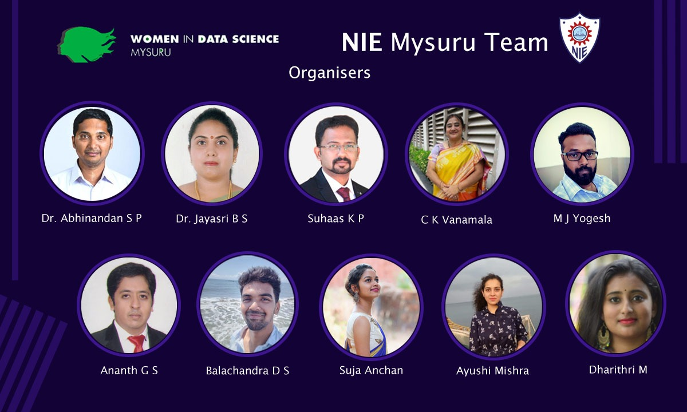
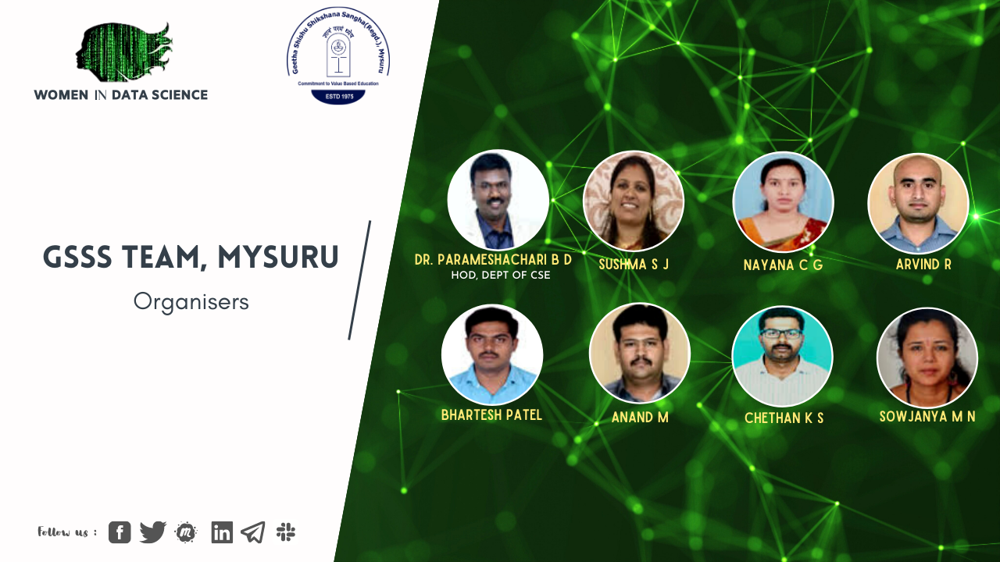
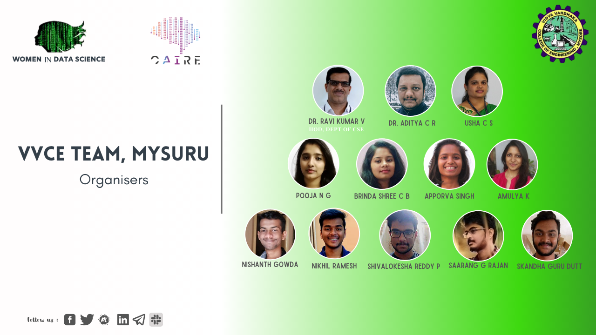
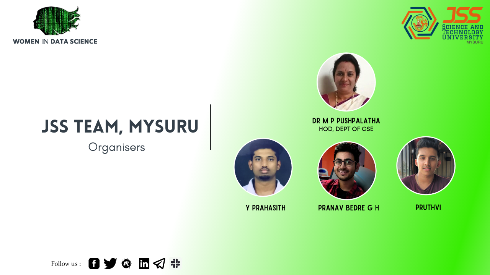

WiDS Mysuru datathon workshop was held in collaboration with four universities -
NIE Mysuru , JSS , VVCE and GSSS in the month of February.
WiDS Mysuru clocked the highest participation in
WiDS global datathon hosted in Kaggle with more than 500+ students submitting their solution to the competition.
WiDS Datathon workshop organized at NIE Mysuru on Feb 12 th 2020 saw more than 500 students participating
in the workshop.
Organizers of the datathon workshop at NIE Mysuru

WiDS Datathon workshop organized at GSSS Mysuru on Feb 17 th 2020 and Feb 20 th 2020 saw more than 300 girl
students participating in the workshop.
Organizers of the datathon workshop at GSSS Mysuru

WiDS Datathon workshop organized at VVCE Mysuru on Feb 18 th 2020 saw more than 100 students participating
in the workshop.
Organizers of the datathon workshop at VVCE Mysuru

WiDS Datathon workshop organized at JSS Mysuru on Feb 19 th 2020 saw more than 200 students participating
in the workshop.
Organizers of the datathon workshop at JSS Mysuru
